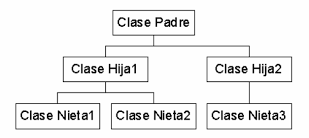
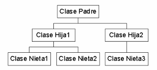

Propiedades fundamentales de la orientación a objetos
Las siguientes propiedades en su conjunto definen claramente a los lenguajes orientados a objetos, sin embargo, no son exclusivas de este paradigma, ya que pueden existir en otros. Estas son:
- Abstracción (tipos abstractos de datos y clases)
- Encapsulado de datos
- Ocultación de datos
- Herencia
- Polimorfismo
Abstracción
Es la propiedad de los objetos que consiste en tener en cuenta sólo los aspectos más importantes desde un punto de vista determinado y no tener en cuenta los restantes aspectos. Este término, que se suele utilizar en programación, se refiere al hecho de diferenciar entre las propiedades externas de una entidad y los detalles de la composición interna de la misma.
Mediante esta propiedad se diseñan y fabrican sistemas complejos (computadoras, automóviles, lavadoras, horno microondas, etc.) en primer lugar y, posteriormente, los componentes más pequeños de los cuales están compuestos. Cada componente representa un nivel de abstracción en el cual el uso del componente se aísla de los detalles de la composición interna del componente. La abstracción posee diversos grados denominados niveles de abstracción.Estos niveles de abstracción ayudan a estructurar la complejidad intrínseca que poseen los sistemas del mundo real. En el modelado orientado a objetos de un sistema esto significa centrarse en qué es y qué hace un objeto y no en cómo debe implementarse. Durante el proceso de abstracción es cuando se decide qué características y comportamiento debe tener el modelo.
Aplicando la abstracción se es capaz de construir, analizar y gestionar sistemas de computadoras complejos y grandes que no se podrían diseñar si se tratara de modelar a un nivel detallado. En cada nivel de abstracción se visualiza el sistema en términos de componentes, denominados herramientas abstractas, cuya composición interna se ignora. Esto nos permite concentrarnos en cómo cada componente interactúa con otros componentes y centrarnos en la parte del sistema que es más relevante para la tarea a realizar en lugar de perderse a nivel de detalles menos significativos.
En estructuras o registros, las propiedades individuales de los objetos se pueden almacenar en los miembros. Para los objetos, no sólo es de interés cómo están organizados, sino también qué se puede hacer con ellos; es decir, las operaciones que forman la interfaz de un objeto son también importantes. El primer concepto en el mundo de la orientación a objetos nació con los tipos abstractos de datos (TAD). Un tipo abstracto de datos describe no sólo los atributos de un objeto, sino también su comportamiento (las operaciones). Esto puede incluir también una descripción de los estados que puede alcanzar un objeto.
Un medio de reducir la complejidad es la abstracción. Las características y los procesos se reducen a las propiedades esenciales, son resumidas o combinadas entre sí. De este modo, las características complejas se hacen más manejables.
Encapsulación y ocultación de datos
El encapsulado o encapsulación de datos es el proceso de agrupar datos y operaciones relacionadas bajo la misma unidad de programación. En el caso de los objetos que poseen las mismas características y comportamiento se agrupan en clases, que son más que unidades o módulos de programación que encapsulan datos y operaciones.
La ocultación de datos permite separar el aspecto de un componente, definido por su interfaz con el exterior, de sus detalles internos de implementación. Los términos ocultación de la información (information hiding) y encapsulación de datos (data encapsulation) se suelen utilizar como sinónimos, pero no siempre es así, muy al contrario, son términos similares pero distintos. Normalmente, los datos internos están protegidos del exterior y no se puede acceder a ellos más que desde su propio interior y, por tanto, no están ocultos. El acceso al objeto está restringido sólo a través de una interfaz bien definida.
El diseño de un programa orienta a objetos contiene, al menos, los siguientes pasos:
- Identificar los objetos del sistema.
- Agrupar en clases a todos los objetos que tengan características y comportamiento comunes.
- Identificar los datos y operaciones de cada una de las clases.
- Identificar las relaciones que pueden existir entre las clases.
Un objeto es un elemento individual con su propia identidad (un libro, un automóvil, etc.). Una clase puede describir las propiedades genéricas de un ejecutivo de una empresa (nombre, título, salario, cargo, etc.) mientras que un objeto representará a un ejecutivo específico (Luis Mackoy, director general, etc.). En general, una clase define qué datos se utilizan para representar un objeto y las operaciones que se pueden ejecutar sobre esos datos.
Una clase describe un objeto. En el sentido estricto de programación, una clase es un tipo de datos. Diferentes variables se pueden crear de este tipo. En programación orientada a objetos, éstas se llaman instancias. Las instancias son, por consiguiente, la realización de los objetos descritos en una clase. Estas instancias constan de datos o atributos descritos en la clase y se pueden manipular con las operaciones definidas dentro de ellas.
Los términos objeto e instancia se utilizan frecuentemente como sinónimos. Las operaciones definidas en los objetos se llaman métodos. Cada operación llamada por un objeto se interpreta como un mensaje al objeto, que utiliza un método específico para procesar la operación. En el diseño de programas orientados a objetos se realiza en primer lugar el diseño de las clases que representan con precisión aquellas cosas que trata el programa. Las definiciones de clases incluyen una descripción de operaciones permisibles para cada clase, tales como desplazamiento de un círculo o rotación de una línea. A continuación, se prosigue el diseño de un programa utilizando objetos de las clases.
El diseño de clases fiables y útiles puede ser una tarea difícil. Afortunadamente, los leguajes de POO facilitan la tarea ya que incorporan clases existentes en su propia programación. Los fabricantes de software proporcionan numerosas bibliotecas de clases, incluyendo bibliotecas de clases diseñadas para simplificar la creación de programar para entornos tales como Windows, Linux, Macintosh o Unix.
Generalización y especialización: herencia
 

La generalización es la propiedad que permite compartir información entre dos entidades evitando la redundancia. En el comportamiento de objetos existen con frecuencia propiedades que son comunes en diferentes objetos y esta propiedad se denomina generalización.
Por ejemplo, máquinas lavadoras, frigoríficos, hornos de microondas, tostadoras, lavavajillas, etc., son todos electrodomésticos (aparatos del hogar). En el mundo de la orientación a objetos, cada uno de estos aparatos es una subclase de la clase Electrodoméstico y a su vez Electrodoméstico es una superclase de todas las otras clases (máquinas lavadoras, frigoríficos, hornos de microondas, tostadoras, lavavajillas...).
El proceso inverso de la generalización por el cual se definen nuevas clases a partir de otras ya existentes se denomina especialización.
En orientación a objetos, el mecanismo que implementa la propiedad de generalización se denomina herencia. La herencia permite definir nuevas clases a partir de otras clases ya existentes, de modo que presentan las mismas características y comportamiento de éstas, así como otras adicionales.
La idea de clases conduce a la idea de herencia. Clases diferentes se pueden conectar unas con otras de modo jerárquico. Como ya se ha comentado anteriormente con las relaciones de generalización y especialización, en nuestras vidas diarias se utiliza el concepto de clases divididas en subclases.
El principio de la división o clasificación es que cada subclase comparte características comunes con la clase de la que procede o se deriva. Los carros, motos, camiones y buses tienen ruedas, motores y carrocerías; son las características que definen a un vehículo. Además de las características comunes con los otros miembros de la clase, cada subclase tiene sus propias características. Por ejemplo, los camiones tienen una cabina independiente de la caja que transporta la carga; los buses tienen un gran número de asientos independientes para los viajeros que ha de transportar, etc.
De modo similar una clase se puede convertir en padre o raíz de otras subclases. La clase original se denomina clase base y las clases que se derivan de ella se denominan clases derivadas y siempre son una especialización o concreción de su clase base. A la inversa, la clase base es la generalización de la clase derivada. Esto significa que todas las propiedades (atributos y operaciones) de la clase base se heredan por la clase derivada, normalmente suplementada con propiedades adicionales.
Reusabilidad
Una vez que una clase ha sido escrita, creada y depurada, se
puede distribuir a otros programadores para utilizar en sus
propios programas. Esta propiedad se llama reusabilidad o
reutilización.
El concepto de herencia proporciona una extensión o ampliación al
concepto de reusabilidad. Un programador puede considerar una clase
existente y sin modificarla, añadir competencias y propiedades
adicionales a ella. Esto se consigue derivando una nueva clase de
una ya existente. La nueva clase heredará las características de la
clase antigua, pero es libre de añadir nuevas características
propias.
La facilidad de reutilizar o reusar el software existente es uno
de los grandes beneficios de la POO: muchas empresas consiguen
con la reutilización de clase en nuevos proyectos la reducción
de los costes de inversión en sus presupuestos de programación.
¿En esencia cuáles son las ventajas de la herencia? Primero, se
utiliza para consistencia y reducir código. Las propiedades
comunes de varias clases sólo necesitan ser implementadas una
vez y sólo necesitan modificarse una vez si es necesario. La
otra ventaja es que el concepto de abstracción de la
funcionalidad común está soportada
.
Polimorfismo
Además de las ventajas de consistencia y reducción de código, la
herencia, aporta también otra gran ventaja: facilitar el
polimorfismo. Polimorfismo es la propiedad de que un operador o
una función actúen de modo diferente en función del objeto sobre
el que se aplican. En la práctica, el polimorfismo significa la
capacidad de una operación de ser interpretada sólo por el propio
objeto que lo invoca. Desde un punto de vista práctico de
ejecución del programa, el polimorfismo se realiza en tiempo de
ejecución ya que durante la compilación no se conoce qué tipo de
objeto y por consiguiente qué operación ha sido llamada.
La propiedad de polimorfismo es aquella en que una operación tiene
el mismo nombre en diferentes clases, pero se ejecuta de diferentes
formas en cada clase. Así, por ejemplo, la operación de abrir se
puede dar en diferentes clases: abrir una puerta, abrir una ventana,
abrir un periódico, abrir un archivo, abrir una cuenta corriente en
un banco, abrir un libro, etc. En cada caso se ejecuta una operación
diferente, aunque tiene el mismo nombre en todos ellos “abrir”.
El polimorfismo es la propiedad de una operación de ser
interpretada sólo por el objeto al que pertenece. Existen
diferentes formas de implementar el polimorfismo y variará
dependiendo del lenguaje de programación .